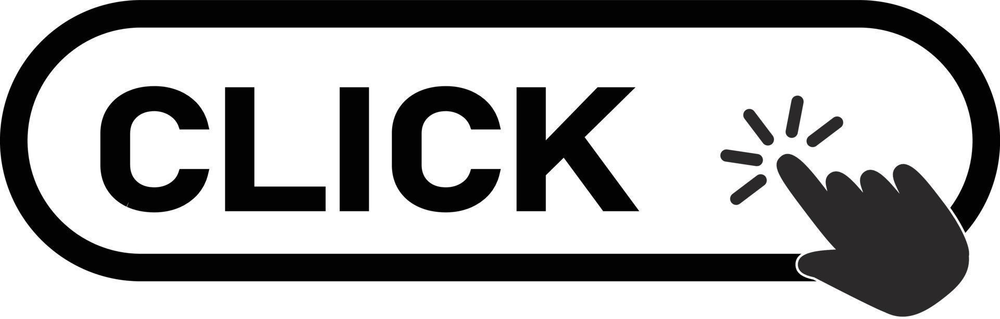

Teve início, neste domingo (18/9), a Semana Nacional do Trânsito 2023 (SNT), evento que acontece anualmente, entre os dias 18 e 25 de setembro, com o objetivo de estimular ações educativas que visam a conscientização da sociedade na segurança no trânsito. O tema deste ano será às emoções às quais estamos sujeitos no trânsito e seus impactos na segurança viária. Na programação da SNT estão previstas várias ações educativas, como lives, palestras, atividades e oficinas, que envolvem diversos órgãos públicos ligados ao tema da segurança viária. O Ministério da Infraestrutura já divulgou a agenda, que você pode conferir aqui, com destaque para entrada em funcionamento do Registro Nacional Positivo de Condutores (RNPC), que prevê benefícios a condutores que não tiverem infrações de trânsito nos últimos 12 meses. Semana Nacional de Trânsito - Instituída pelo CTB (Código de Trânsito Brasileiro) em 1997, a Semana Nacional de Trânsito promove por meio da conscientização de condutores, passageiros, ciclistas e pedestres, um trânsito mais seguro. Deve ser o momento em que todos os integrantes do Sistema Nacional de Trânsito promovam ações de educação e conscientização para a segurança no trânsito.
